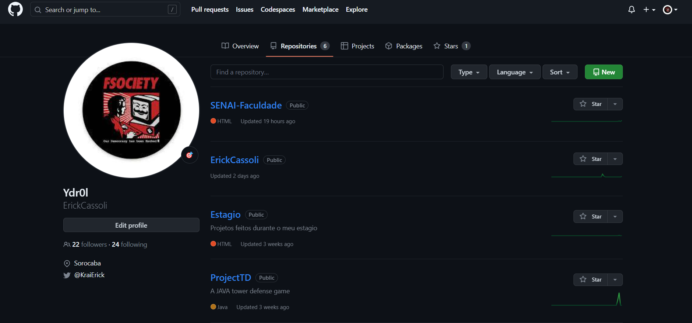

Esse é nosso primeiro semestre
E as matérias foram:


Resumo do semestre
Durante o primeiro semestre do curso de Tecnólogo em Análise e Desenvolvimento de Sistemas, os alunos foram introduzidos a uma variedade de disciplinas que forneceram uma base sólida para a compreensão dos principais conceitos e habilidades necessários na área de tecnologia. Nesse período, foram abordadas as seguintes matérias: linguagem de programação, automação, redes de computadores, banco de dados e ciência de dados. Ao clicar nos cards a cima poderá ver um pouco sobre cada matéria em especifico e alguns projetos realizados em aula para assim aprimorar nossos conhecimento e fixarmos os mesmos.
Grande parte dos projetos e exercícios podem ser encontrados aqui:
Github
 Nesse repositório você encontrara 4 pastas:
- Aulas-JavaScript: Onde contem as atividades que fizemos, incluindo exercícios e projetos envolvendo Javascript
- AulasHTML-CSS: Onde contem as atividades que fizemos, como por exemplo sites e testes de html e css (currículo, html semântico)
- FolhaDePagamento: Um projeto um pouco mais elaborado onde se encontra HTML, Css e Javascript
- Front-For-JSex: Um projeto também mais elaborado feito pela turma, intitulado transform code, onde voce pode usar o site de base para o seu próprio código de logica Javascript
- Pagina1Semestre: Por fim esse próprio projeto que vocês estão vendo agora
Drive
Aqui você encontrara 4 pastas:
- Tinkercad: Onde contem as atividades da materia de automação, incluindo projetos com Arduino
- SQL'S: Contem alguns arquivos de criação, Inserção e manipulação de tabela em SQL
- Packet Tracer: Aqui se encontra projetos de redes de computadores feitos nas aulas
- Colab Notebooks: e Por fim aqui se encontra as atividades feita em ciência de dados